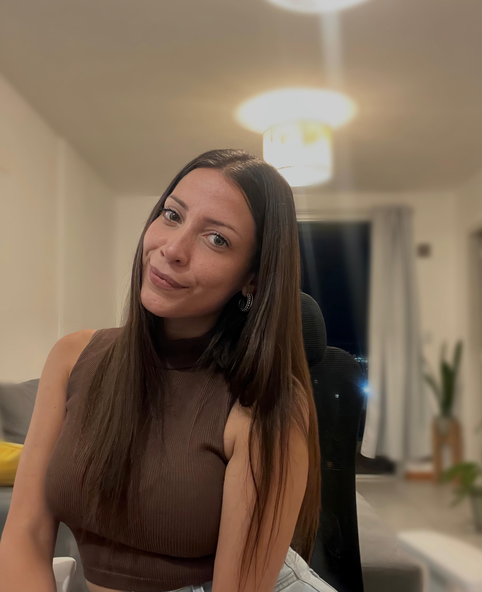
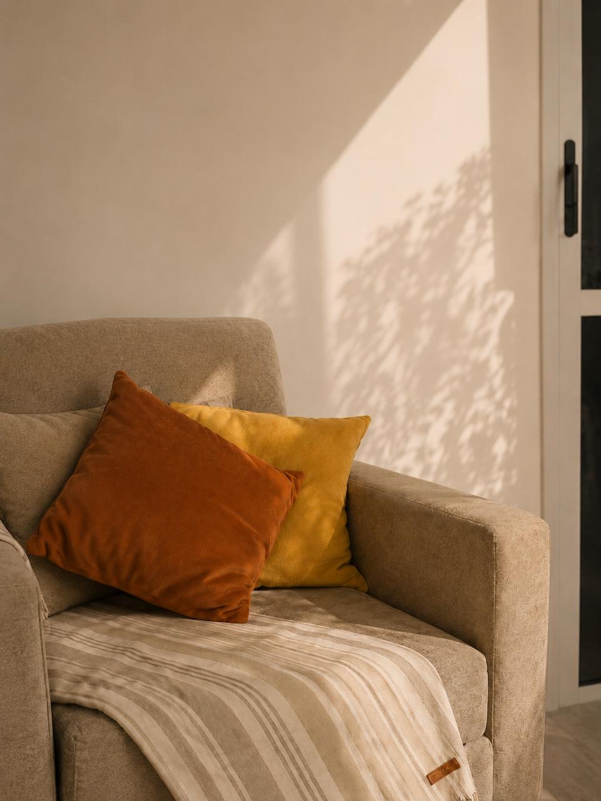

Psicóloga Clínica · M.P. 16.087Especializada en Terapia Cognitivo Conductual (TCC)
Soy Licenciada en Psicología egresada de la Universidad Nacional de Córdoba.
Acompaño procesos terapéuticos de adolescentes y adultos desde la Terapia Cognitivo Conductual (TCC) y Terapias Contextuales.
Me gusta definir la terapia como un trabajo en equipo: un espacio seguro y cálido, donde exploramos juntos qué cosas te están haciendo ruido hoy.
Si estás buscando un lugar para priorizarte, ¡llegaste al lugar indicado!
Durante nuestro primer encuentro vamos a conocernos, conversar sobre el motivo de tu consulta y definir juntos los objetivos terapéuticos.
No necesitás preparar nada previamente.
Es un espacio para que puedas hablar con total tranquilidad y sin juicios.

Acompañamiento en una etapa de cambios, brindando herramientas para la gestión emocional, la ansiedad y el desarrollo de la identidad.
Abordaje de la ansiedad, el estrés, las crisis vitales y el desarrollo personal mediante intervenciones basadas en evidencia (TCC).